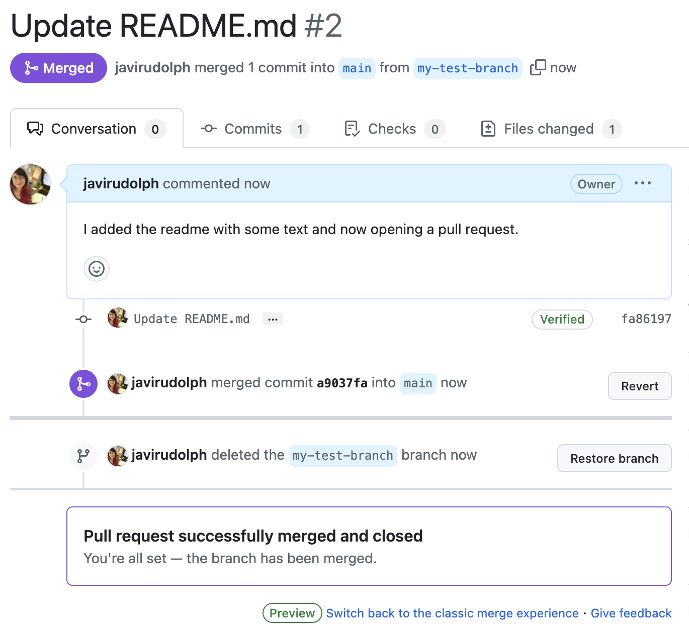

I have taught multiple workshops to help researchers get started with version control and GitHub, because I think it is an incredibly valuable tool. Like most of my workshops, this is tailored to the group, very hands-on and with very few slides. I also think there are amazing blogs out there with good information already, so creating yet another one felt redundant. At the same time, I find a lot of the resources have many details and take a long time. So, I wrote yet another blog on Git and Github, but I tried to keep it simple and straightforward. I provide links for more exhaustive resources. But, think of this one as taking the tiny step to get started.
Note: This tutorial has been developed with beginners in mind, and has largely been taught to folks in the biological sciences with zero to no previous exposure to git and GitHub.
What is Git?
Version control system which essentially keeps track of a group of files and their history. The analogy I always encounter is saving the final_final_version.docx, to which git can save you this trouble and keep track of one document and keep a history of the changes associated to it, with the ability to access and go back to previous versions if needed.
A repository is a collection of files within a group that gets tracked together. For now, just think of it as a folder.
Why Github?
Github, GitLab, and BitBucket are all similar and they provide hosting services, which is basically a home for your project on the internet. They are a git server.
It’s like having a DropBox or GoogleDrive but for git-based projects, which for the most part is related to code.
By having code on GitHub, you can let other people see your stuff (you can choose whom), and also contribute to other people’s code. Maybe think of it as the social media of code (but if you are not a fan of social media, then forget this analogy).
If you work across multiple machines (ex: personal laptop and work desktop), GitHub also lets you synchronize and make changes to your work - similar to DropBox.

You might have heard the words commit, push, and pull and wondered what these mean. Imagine yourself working on your laptop, you make some changes to the code and press save. This has saved those changes in your local, your laptop.Tomorrow, when you open your code, they will still have those changes. A commit is similar, it saves those changes to your local but it saves it to that git log, that history of the file. A push sends those changes to a shared online repo (your storage place in GitHub). So now, the changes you made are available in your laptop, and also in the remote GitHub repository. Let’s say you go to work the next day, and open that same project and files on your local work desktop, so to synchronize or update it to the changes you made from your laptop, you pull from your remote (your GitHub repo).
But whyyyyyy…?
The big and simple answer here is sharing. We can add other things such as transparency, traceability, accessibility, reproducibility, and openness. Also, just flexibility to work on multiple machines and instead of using Dropbox or OneDrive, you keep track of the history of the code plus get to access and synchronize it from multiple machines.
Another reason is searching. Have you ever worked on something and couldn’t remember how to write the code for a thing you’ve already done, but can’t quite write the right things? Sure, you could use AI to solve that and burn down a few trees in the process (love AI, but come on folks! it’s not for everything). OR you could search you online repos for those keywords and find the thing you already did and need to do again. An example of this for me is the theme in ggplot, I forget some of the settings I like for some plots, or placement of the legend, etc. And if this idea of storing code is attractive to you, check out GitHub gists.
For the sake of open science and reproducibility
At least for academia, I have noticed people use GitHub as a code storage place - essentially, you write a paper, have some code associated with it, upload the code and use that link for the Data availability section in the manuscript. I don’t love this, but if it means the code is available, I’ll take it. Would it be nice to have the history associated with the work? Sure…
For long-term code storage (you publish a paper and share the code/data for it) I think Zenodo is a great option! There are other options too, like Open Science Framework and both of these integrate with GitHub. So, you could start your project with Git/GitHub, track all the changes, and then when finished, release it as a version to Zenodo. This is what I did for my dissertation, with the added benefit that it allows people to cite the code directly.
So, why do I love Git and GitHub? It is a relatively simple step to keeping us honest. I push for reproducibility in science and open source work, so using version control is one aspect of this. I also think this is an great resource and learning tool for young scientists! Personally, I have learned much more from people’s repositories of their analysis, than from papers that just tell you what they did, but don’t show you how. Also, I think it is important to have tools that allow for real-time collaboration, where we can not only work together, but also openly discuss changes and keep track of why decisions were made. Git allows for the tracking of changes, but GitHub adds the web interface for issues and conversations surrounding the code.
So how do you learn?
Github itself has a dedicated section for learning in the docs and in particular, the Hello World tutorial will get you creating a repo, managing a branch and merging a pull request.
For the R user, I think a straightforward resource out there is Happy git with R.
But as with all things in learning, it can be easy to find so many resources that you end up not knowing where to even begin. So today, let’s just focus on interacting with GitHub.
Hands-on!
In previous workshops, I have created repositories specific to the group or organization that I’ll be working with. Sometimes the repo I create stays with the organization or sometimes I just delete it. For the sake of this tutorial’s posterity, I created github-practice repo. The goal today is for you to create your account and submit your first issue.
- Create your GitHub account - If you don’t already have one, create a free GitHub account.
- Locate the github-practice repo create an issue to propose a change, create a to do list, or add a description. Once on the repo you will also find suggestions for exercises and more instructions. You can also just add a comment to an existing issue.
Issues originally a bug tracker but highly underutilized in our fields. I love these, as they provide a nice way to keep track of comments and conversation around specific files or problems with your code.
Branches and pull requests
When you first start using Git and Github, thinking of branches might feel a little intimidating, and honestly, you can get away with no using them at first. But branches become essential once you get a little adventurous and want to try things that could break your code. They are also incredibly useful for working with others, incorporating changes in a hopefully more structured way and keeping track of everyone’s contributions to the project.
Essentially:
- Create Branch to make a change.
- Commit changes to the new branch.
- Open Pull request to merge the changes to main branch.
- Optional and recommended: delete branch
Also known as a feature branch workflow

Your turn!
You can find additional resources and guides for this directly on the github-practice repo.
- Create a new branch called
yourname-branch. - Make a change in this branch and save the change as a commit (Hint: green button that says Commit changes…) When you save or commit your changes, it is recommended that you add a little message to say what you did.
- Open pull request to suggest your changes be included into the main branch. This is basically sending me a message - “Hey Javi, I made some changes, can you pull them from my branch?”.
One you create the pull request, I would get a notification saying someone has made changes. Then, I can approve those changes, and merge them to the main branch. If I want to, then I can delete that branch that proposed the change.

You did it!
There you have it! Your first interaction with GitHub 🤩 and since you have Registered for a GitHub account, chapter 4 in the HappyGit with R book.
What do you think your next step should be? Perhaps you could get started by linking your local R/RStudio to your brand new GitHub account! You could continue with chapter 5 in the Happy Git with R book or follow along this tutorial in R for the rest of us
Something to keep in mind… This website and blog post are created with Quarto and edited from RStudio, and linked to my Github! If you are familiar with R markdown, then think of Quarto as the next generation, which allows you to work not only with R, but also python and julia. It is an open source publishing system (It helps you create pretty documents using code and text), and you can create anything from a website to a power point presentation, and even a pre-formatted scientific manuscript.

Citation
@online{rudolph2025,
author = {Rudolph, Francisca Javiera},
title = {Why {I} Love {Git} and {GitHub}},
date = {2025-02-20},
url = {https://javirudolph.github.io/posts/2025-02-20-git-and-github/},
langid = {en}
}